Programming Project #1
Images of the Russian Empire
Overview
Sergei Prokudin-Gorskii recorded scenes through blue, green, and red filters, producing three vertically stacked grayscale exposures. My goal was to separate these channels and automatically align them into a single RGB image.


Approach
I first divided each glass-plate scan into three equal sections in B, G, R order. I kept blue fixed and aligned green and red to it.
For each candidate displacement (dx, dy), I computed the mean
squared difference between the shifted source channel and the
reference:
MSE = (1/N) Σ(Ishifted − Ireference)².
Since every candidate compares the same number of pixels,
minimizing MSE produces the same displacement as minimizing the
squared L2 distance.
The plate borders are visually strong but unrelated to the scene, so I evaluated this score only on the central 60% of each channel.
For small JPEGs, I exhaustively searched displacements from −15 to +15 pixels in both directions. For high-resolution TIFFs, I recursively downsampled the channels by a factor of two until the largest dimension was at most 250 pixels. I aligned the coarsest level, doubled its displacement at each finer level, and refined within a ±3-pixel neighborhood.
Offsets below are listed as (x, y). Positive x moves right and positive y moves down.
Single-Scale Alignment
G (2, 5) · R (3, 12)

G (2, −3) · R (2, 3)

G (3, 3) · R (3, 7)
Multi-Scale Pyramid Alignment

G (2, 5) · R (3, 12)

G (2, −3) · R (2, 3)
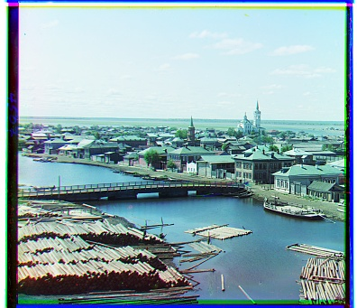
G (3, 3) · R (3, 7)

G (4, 25) · R (−4, 58)

G (24, 49) · R (40, 107)
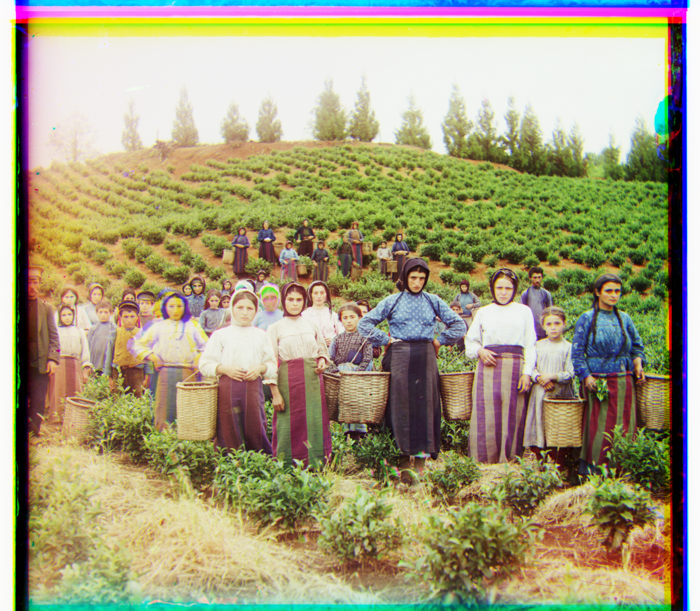
G (17, 59) · R (14, 123)
G (17, 41) · R (23, 89)
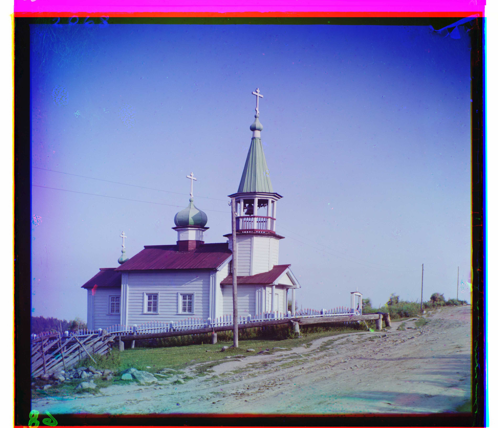
G (7, 40) · R (11, 131)

G (10, 81) · R (14, 178)
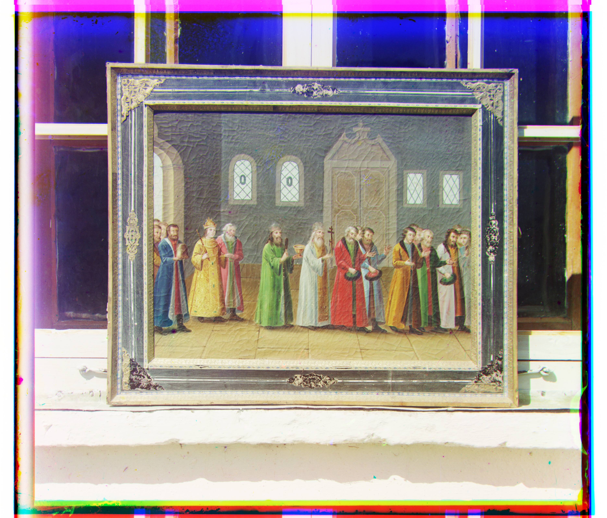
G (3, 29) · R (7, 69)

G (29, 78) · R (37, 176)
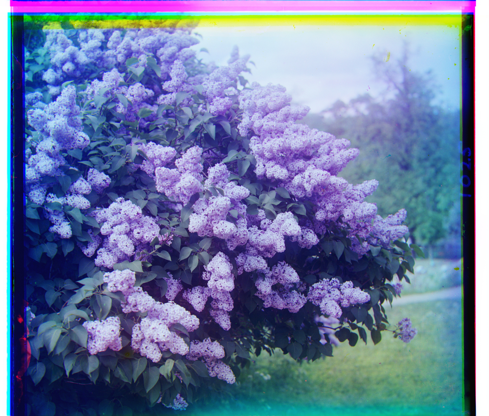
G (−5, 50) · R (−24, 97)
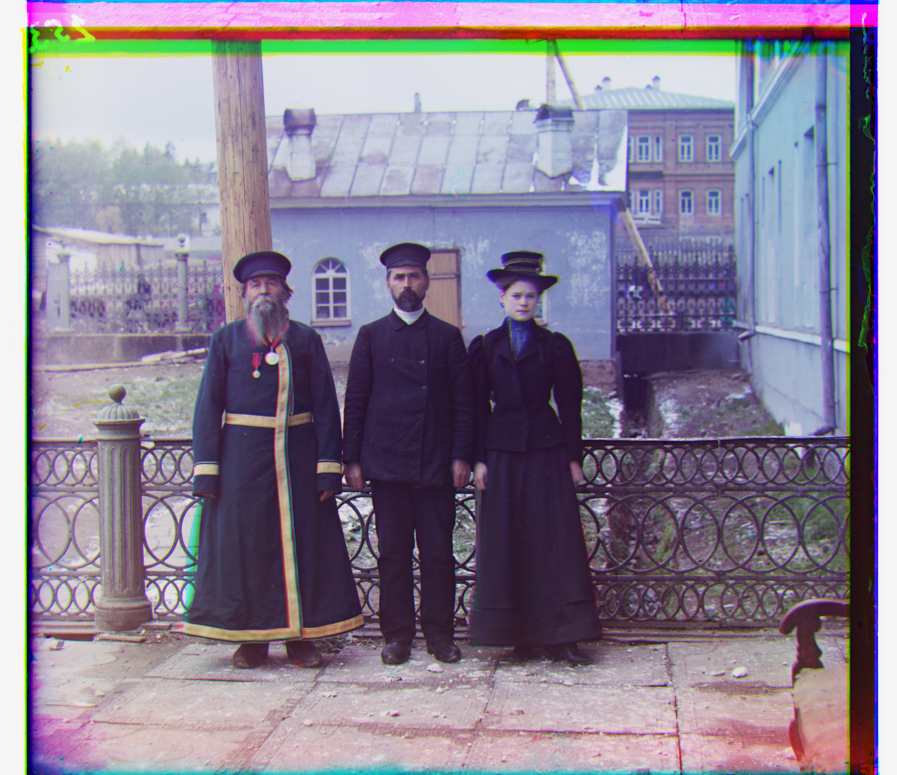
G (14, 52) · R (12, 111)
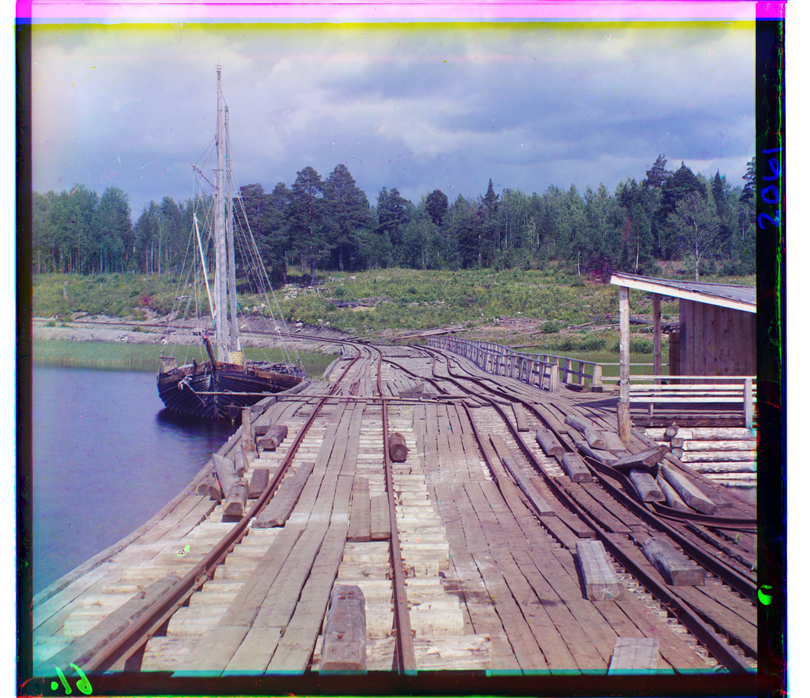
G (−7, 15) · R (−16, 82)
Better Features: Fixing Emir
Raw-pixel L2 matching struggled on Emir because the blue, green, and red exposures represent his vividly colored robe with very different intensities. Similar scene content therefore did not necessarily have similar grayscale values.
I computed horizontal and vertical Sobel derivatives and aligned the gradient magnitudes instead. Edges describe shared structure such as the face, robe, and doorway while being less dependent on channel brightness. The resulting offsets were then applied to the original channels.
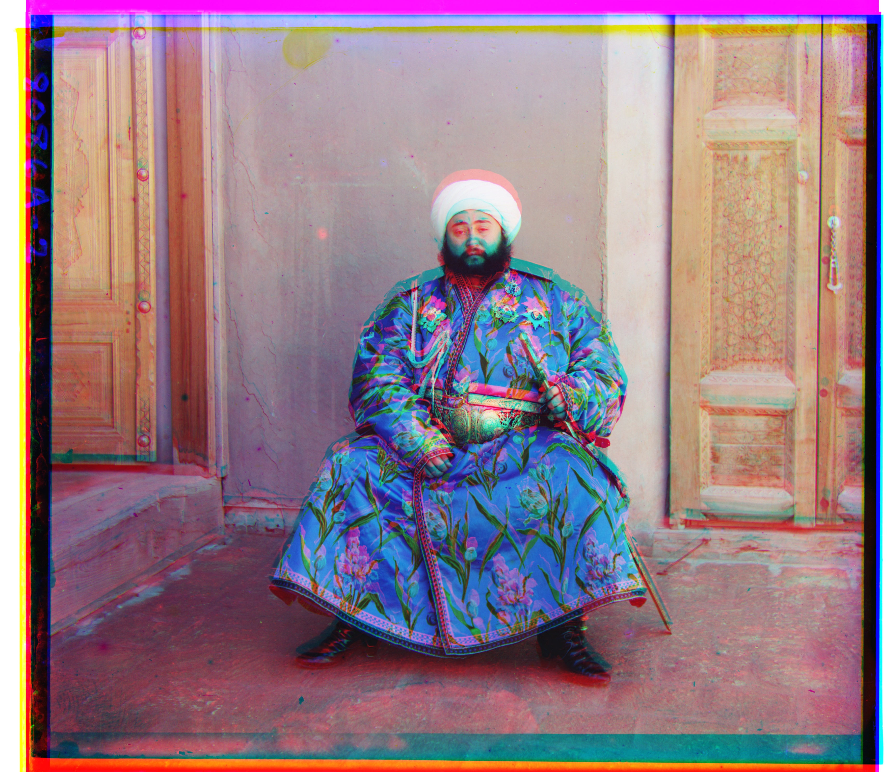
G (24, 49) · R (43, 61)
G (24, 49) · R (40, 107)
Additional Images from the Library of Congress
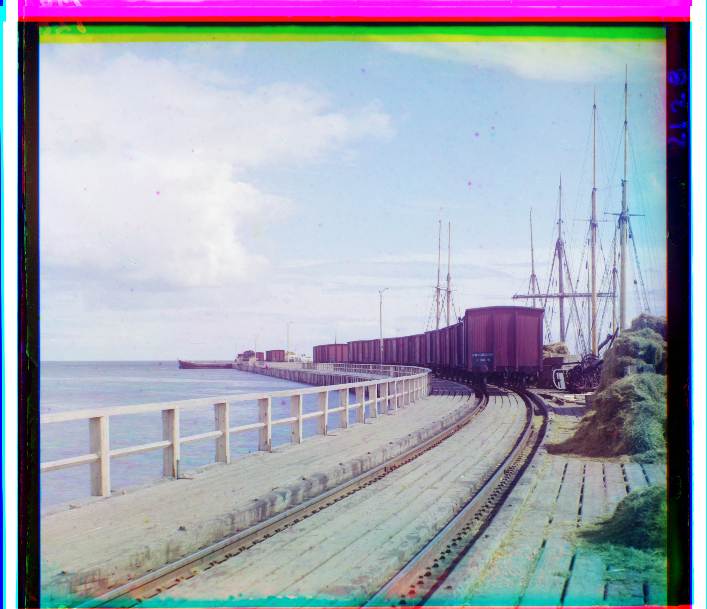
G (−1, 33) · R (−4, 115)
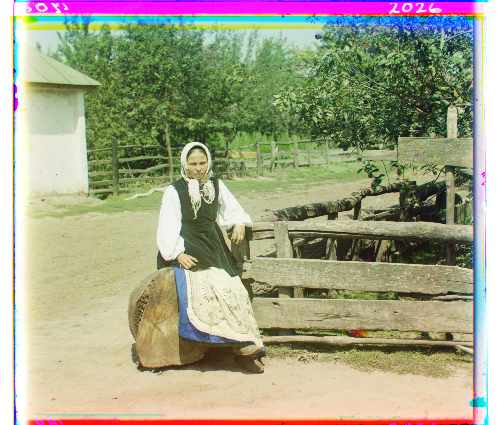
G (3, 26) · R (4, 120)
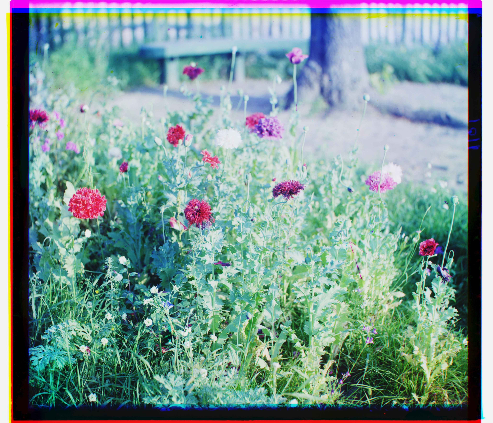
G (8, 9) · R (14, 61)